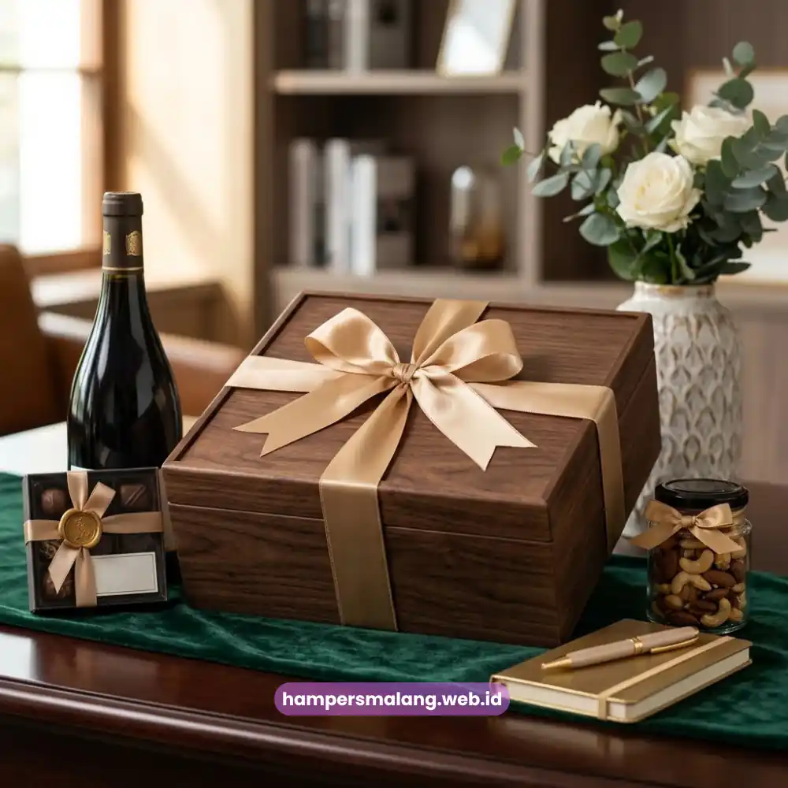
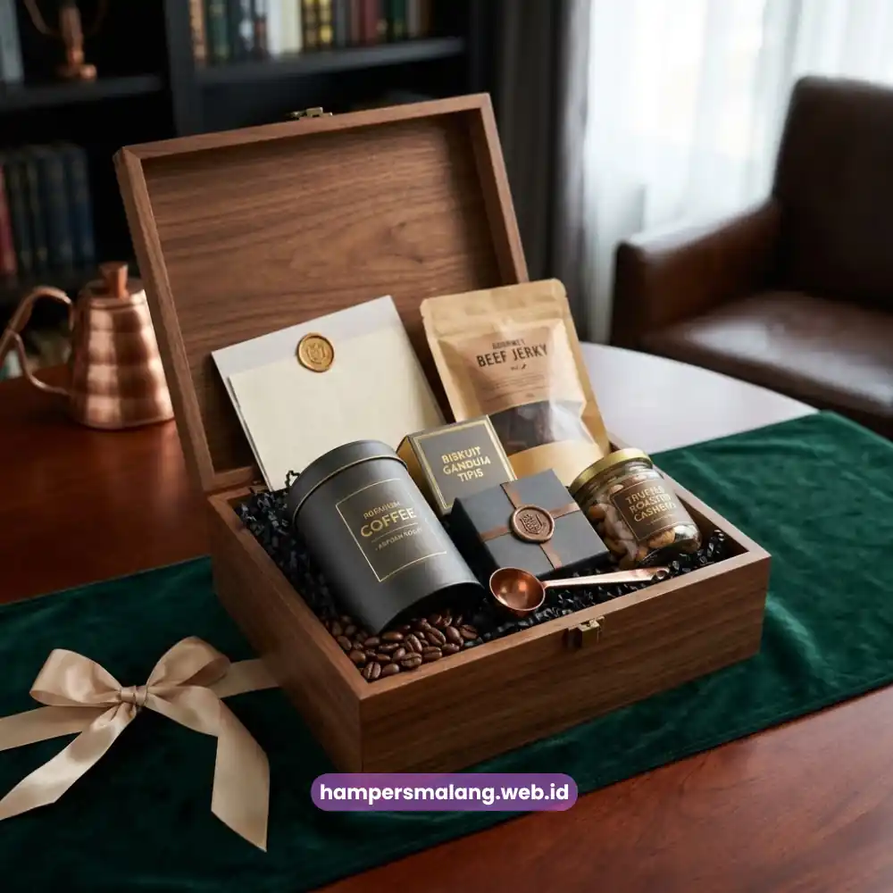

Hampers relasi bisnis adalah paket hadiah korporat yang dikirimkan kepada klien, mitra, atau kolega untuk mempererat hubungan profesional sekaligus menjaga citra perusahaan.
Momen pengirimannya biasanya bertepatan dengan akhir tahun, penandatanganan kerja sama, atau hari raya.
Pemilihan isi dan kemasan yang tepat akan menentukan seberapa kuat kesan yang tertinggal di benak penerima.
- Hampers relasi bisnis berfungsi sebagai simbol apresiasi sekaligus alat menjaga loyalitas mitra kerja.
- Kemasan yang rapi dan isi yang relevan mencerminkan profesionalisme perusahaan pengirim.
- Ide hampers terbaik menggabungkan unsur eksklusivitas, kegunaan, dan sentuhan personal seperti logo perusahaan.
- Waktu pengiriman yang tepat memperkuat makna hampers sebagai bentuk komunikasi bisnis.
- Hampers Malang menyediakan pilihan hampers custom yang siap disesuaikan dengan identitas brand Anda.
Apa Itu Hampers Relasi Bisnis?
Hampers relasi bisnis adalah bingkisan yang dirancang khusus untuk mempertahankan dan memperkuat hubungan profesional antara satu perusahaan dengan pihak eksternalnya, baik itu klien, vendor, investor, maupun mitra strategis.
Berbeda dari hadiah pribadi, hampers ini disusun dengan mempertimbangkan citra korporat, sehingga pemilihan produk, warna kemasan, hingga kartu ucapan disesuaikan agar mencerminkan identitas perusahaan pengirim.
Dalam praktiknya, hampers semacam ini menjadi salah satu instrumen komunikasi non-verbal yang efektif.
Sebuah bingkisan yang dikemas rapi dengan isi berkualitas mampu menyampaikan pesan bahwa perusahaan menghargai kerja sama yang telah terjalin, tanpa harus disampaikan secara eksplisit melalui kata-kata.
Banyak perusahaan menjadikannya bagian dari strategi relationship management tahunan, terutama menjelang pergantian tahun fiskal atau hari besar keagamaan.
Baca Juga: Corporate Gift Malang untuk Menjaga Hubungan dengan Klien
Mengapa Hampers Relasi Bisnis Penting bagi Perusahaan?
Hampers relasi bisnis penting karena berperan langsung dalam membangun kepercayaan dan loyalitas jangka panjang antara perusahaan dan mitra kerjanya.
Hubungan bisnis yang sehat tidak hanya dibangun dari transaksi, tetapi juga dari perhatian yang konsisten di luar konteks pekerjaan formal.
Ketika sebuah perusahaan secara rutin mengirimkan hampers kepada relasinya, hal ini menciptakan kesan bahwa hubungan tersebut dihargai lebih dari sekadar kepentingan bisnis semata.
Dampaknya terasa pada negosiasi berikutnya, kelancaran komunikasi, hingga kesediaan mitra untuk memberikan prioritas layanan.
Selain itu, hampers dengan sentuhan branding turut berfungsi sebagai media promosi halus yang memperluas visibilitas nama perusahaan di lingkungan mitra.
Apa Saja Ide Hampers Relasi Bisnis yang Elegan dan Profesional?
Berikut sembilan ide hampers relasi bisnis yang dapat disesuaikan dengan anggaran, momen, dan profil penerima, mulai dari yang bernuansa klasik hingga modern.
1. Hampers Kopi dan Teh Premium
Kombinasi kopi single origin atau teh premium dalam kemasan eksklusif cocok untuk relasi yang gemar menikmati waktu santai di sela kesibukan kerja.
Hampers jenis ini memberi kesan hangat namun tetap berkelas, terutama bila dilengkapi dengan cangkir bermaterial keramik premium bertema minimalis.
2. Hampers Snack dan Kudapan Kemasan Eksklusif
Pilihan camilan sehat maupun tradisional yang dikemas ulang secara eksklusif memberikan kesan mewah tanpa terkesan berlebihan.
Cocok dikirim ke kantor mitra karena dapat dinikmati bersama oleh tim, sehingga jangkauan kesan positifnya lebih luas.

3. Hampers Alat Tulis dan Perlengkapan Kerja
Notebook kulit, pulpen premium, hingga organizer meja menjadi pilihan hampers yang fungsional sekaligus tahan lama.
Barang-barang ini akan terus digunakan penerima dalam aktivitas kerja sehari-hari, sehingga nama perusahaan pengirim berpotensi terus terlihat bila dilengkapi elemen branding.
4. Hampers Perawatan Diri (Self-Care) Korporat
Rangkaian produk perawatan tangan, aromaterapi, atau lilin wangi memberi kesan bahwa perusahaan turut memperhatikan kesejahteraan penerima di luar konteks pekerjaan.
Ide ini cocok untuk momen apresiasi seperti ulang tahun perusahaan mitra.
5. Hampers Buah dan Makanan Sehat
Pilihan buah segar premium yang dikemas dalam keranjang atau kotak eksklusif memberi kesan elegan sekaligus mencerminkan perhatian pada gaya hidup sehat.
Hampers jenis ini populer untuk momen kunjungan langsung ke kantor mitra.
6. Hampers Custom Logo Perusahaan
Menyematkan logo perusahaan pada kemasan, kartu ucapan, atau bahkan produk di dalamnya adalah cara efektif memperkuat brand recall.
Hampers custom logo cocok untuk pengiriman dalam jumlah besar, misalnya kepada seluruh jajaran mitra strategis pada momen akhir tahun.
7. Hampers Eksekutif Serba Hitam Emas
Kombinasi warna hitam dan emas pada kemasan memberikan kesan mewah dan formal, ideal untuk dikirimkan kepada level direksi atau investor.
Isi hampers biasanya dipilih dari kategori premium seperti cokelat kualitas tinggi atau minuman non-alkohol eksklusif.
8. Hampers Ramah Lingkungan (Eco-Friendly)
Menggunakan material kemasan daur ulang dan produk lokal berkelanjutan menunjukkan komitmen perusahaan terhadap isu lingkungan.
Ide ini semakin diminati oleh perusahaan yang ingin menonjolkan nilai keberlanjutan dalam citra bisnisnya.
9. Hampers Tematik Sesuai Momen
Hampers yang disesuaikan dengan momen tertentu, seperti hari kemerdekaan, akhir tahun, atau pembukaan cabang baru, memberi kesan bahwa perusahaan memperhatikan detail dan konteks hubungan dengan relasinya secara personal.
Bagaimana Cara Memilih Hampers Relasi Bisnis yang Tepat?
Memilih hampers relasi bisnis yang tepat memerlukan pertimbangan pada profil penerima, momen pengiriman, dan pesan yang ingin disampaikan perusahaan.
Ketiga faktor ini saling berkaitan dan menentukan kesan akhir yang diterima mitra.
Sesuaikan dengan Profil dan Level Penerima
Hampers untuk mitra setingkat direksi umumnya memerlukan tampilan yang lebih formal dan isi yang lebih eksklusif dibandingkan hampers untuk tim operasional mitra.
Memahami posisi dan preferensi penerima membantu perusahaan menentukan kategori produk yang paling relevan.
Perhatikan Momen dan Waktu Pengiriman
Waktu pengiriman turut memengaruhi makna hampers.
Pengiriman pada momen krusial seperti pasca-penandatanganan kontrak besar cenderung memberi dampak lebih kuat dibandingkan pengiriman rutin tanpa konteks jelas.
Pastikan Kualitas dan Kemasan Mencerminkan Brand
Kemasan yang rapi dan konsisten dengan identitas visual perusahaan memperkuat kesan profesional.
Detail kecil seperti pita, kartu ucapan bertulisan tangan, atau label custom mampu meningkatkan nilai persepsi hampers secara signifikan.
Kesalahan Umum dalam Memberikan Hampers Relasi Bisnis
Beberapa kesalahan yang sering terjadi antara lain memilih isi hampers yang terlalu umum tanpa mempertimbangkan preferensi penerima.
Mengirimkan hampers tanpa kartu ucapan yang personal, serta mengabaikan konsistensi kualitas kemasan antar penerima juga sebaiknya dihindari.
Kesalahan lain yang cukup sering muncul adalah pengiriman yang terlambat dari momen yang seharusnya, sehingga makna hampers menjadi berkurang.
Hampers relasi bisnis yang dipilih dengan cermat mampu memperkuat hubungan profesional sekaligus meningkatkan citra perusahaan di mata mitra kerja.
Kesembilan ide di atas dapat disesuaikan dengan anggaran dan momen yang tepat agar pesan apresiasi tersampaikan secara maksimal.
Tanya Jawab Seputar Hampers Relasi Bisnis
Hampers relasi bisnis dirancang khusus dengan mempertimbangkan citra korporat pengirim, sedangkan parcel biasa umumnya bersifat lebih umum tanpa unsur branding atau penyesuaian profil penerima.
Waktu terbaik umumnya bertepatan dengan momen penting seperti akhir tahun, hari raya, ulang tahun perusahaan mitra, atau pasca pencapaian kerja sama tertentu.
Bisa. Banyak penyedia hampers menawarkan opsi custom logo pada kemasan, kartu ucapan, hingga produk di dalamnya untuk memperkuat identitas brand.
Anggaran bervariasi tergantung level penerima dan tujuan pengiriman, mulai dari kategori standar hingga eksekutif premium, sehingga sebaiknya disesuaikan dengan kebijakan internal perusahaan.
Tidak selalu. Hampers dapat dikirim secara individual kepada mitra kunci maupun dalam jumlah besar untuk seluruh jajaran perusahaan mitra, tergantung kebutuhan dan strategi relasi yang ingin dibangun.

Butuh Hampers Perusahaan?
Solusi Hampers & Corporate Gift Kreatif di Jawa Timur.
Ditulis oleh Tim Maroon Souvenir
Sahabat mahasiswa dan pelaku bisnis di Malang Raya. Berpengalaman menangani merchandise event kampus, instansi pemerintahan, dan hotel berbintang di Batu.